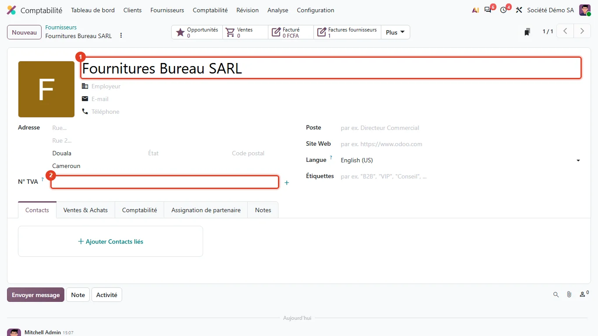
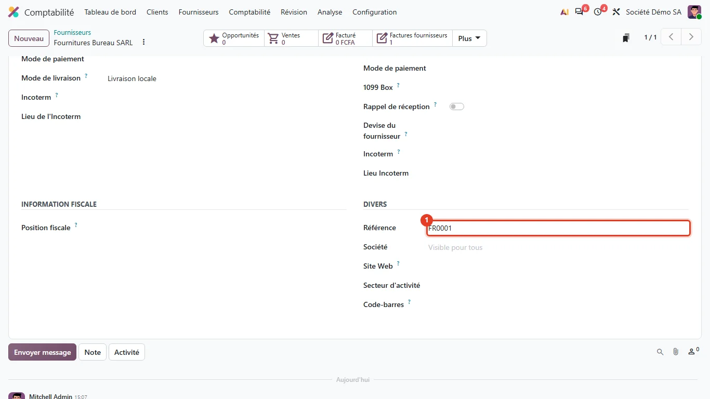

Créer un fournisseur
Objectif. Créer une fiche fournisseur complète et sans doublon.
Menu Odoo 15Comptabilité > Fournisseurs > Fournisseurs
Étapes
- Recherchez d'abord le fournisseur pour éviter un doublon.
- Cliquez sur Nouveau : raison sociale complète (1), NIU (2), adresse.
- Onglet Ventes et achats : saisissez le code du fournisseur dans Référence (1).
- Enregistrez.


À vérifier
- Le NIU est au bon format et n'existe pas déjà sur une autre fiche.
À éviter
- Ne créez pas un fournisseur sous un nom abrégé ou tronqué.
Exercice
Créez un fournisseur avec son NIU et son code.